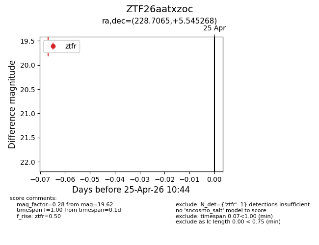
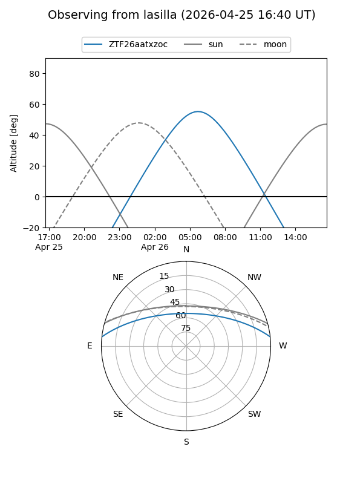
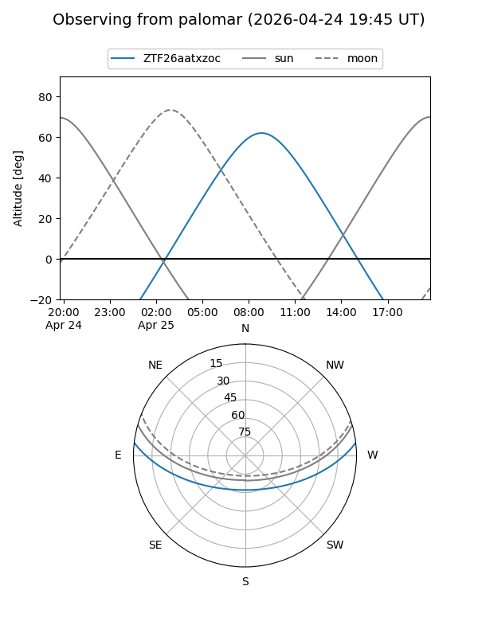
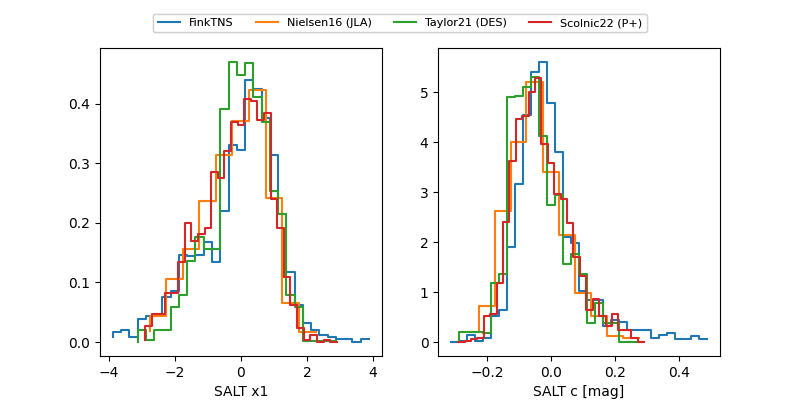

ZTF26aatxzoc
Target ZTF26aatxzoc at 2026-04-25 10:46
Aliases and brokers:
FINK: link
Lasair: link
ALeRCE: link
alt names
ZTF26aatxzoc (ztf,fink_ztf)
Coordinates:
equatorial (ra, dec) = 228.7065,+5.54527
equatorial (HMS+DMS) = 15:14:49.55,+05:32:42.97
galactic (l, b) = (7.1235,+49.64938)
Flags:
Photometry:
last ztfr=19.62
1 ztfr detections
Lightcurve

Visibility


Additional plots
